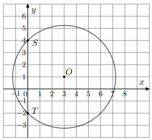

W układzie współrzędnych dany jest okrąg \(O: (x+1)^2+(y-2)^2=9\).
Okrąg \(K\) jest obrazem okręgu \(O\) w symetrii osiowej względem osi \(Oy\).
Równanie okręgu \(K\) to:
Odbicie względem osi \(Oy\) zmienia znak współrzędnej \(x\).
Środek okręgu \(O\) to \((-1,2)\). Odbity punkt: \((1,2)\).
Równanie: \((x-1)^2+(y-2)^2=9\).
Odp.: D.
Zad. 2
(maj 2025 - zad. 24)
Punkt \(P=(0,0)\) leży na okręgu o środku \(S=(2,4)\). Równanie tego okręgu to:
Odległość \(PS=\sqrt{(0-2)^2+(0-4)^2}=\sqrt{4+16}= \sqrt{20}\).
Równanie: \((x-2)^2+(y-4)^2=20\).
Odp.: B.
Zad. 3
(grudzień 2024 - zad. 23)
Dane są okręgi:
\(o_1:(x-1)^2+(y-2)^2=1\),
\(o_2:(x+1)^2+(y+2)^2=9\),
\(o_3:(x-3)^2+(y-4)^2=4\),
\(o_4:(x+3)^2+(y+4)^2=16\).
Który okrąg nie ma punktów wspólnych z osiami układu?
Sprawdzenie przecięć z osiami pokazuje, że tylko \(o_3\) leży całkowicie „poza” nimi.
Odp.: C.
Zad. 4
(sierpień 2024 - zad. 23)
Odcinek o końcach \(A=(-4,7), B=(6,-1)\) jest średnicą okręgu.
Podaj równanie okręgu:
Środek to punkt \(M=\big(\tfrac{-4+6}{2}, \tfrac{7+(-1)}{2}\big)=(1,3)\).
Promień: \(AM=\sqrt{(1+4)^2+(3-7)^2}=\sqrt{25+16}=\sqrt{41}\).
Równanie: \((x-1)^2+(y-3)^2=41\).
Odp.: A.
Zad. 5
(czerwiec 2024 - zad. 23.1)
Dany jest okrąg: \((x-1)^2+(y+2)^2=5\).
Oceń prawdziwość stwierdzeń:
1. Punkt \((-1,-3)\) należy do okręgu.
2. Promień okręgu wynosi \(5\).
1. Podstawienie: \((-1-1)^2+(-3+2)^2=4+1=5\) ⇒ należy. Odp.: P.
2. Równanie ma postać \((x-a)^2+(y-b)^2=r^2\). Tutaj \(r^2=5\), więc \(r=\sqrt{5}\), a nie 5. Odp.: F.
Klucz: P, F.
Zad. 6
(grudzień 2023 - zad. 20)
Okrąg o środku \(S=(4,-2)\) jest styczny do osi \(Ox\).
Podaj równanie tego okręgu:
Odległość środka od osi \(Ox\) wynosi \(|-2|=2\). To promień.
Zatem równanie: \((x-4)^2+(y+2)^2=2^2=4\).
Odp.: A.
Zad. 7
(sierpień 2023 - zad. 26)
Okrąg o środku \(S=(-1,2)\) i promieniu \(3\). Równanie tego okręgu to:
Wzór ogólny: \((x-x_0)^2+(y-y_0)^2=r^2\).
Tu: \((x-(-1))^2+(y-2)^2=9\).
\((x+1)^2+(y-2)^2=9\).
Odp.: C.
Zad. 8
(pokazowy 2023 - zad. 17)
Okrąg o środku \(S=(2,-5)\) i promieniu \(r=3\). Podaj równanie:
Wzór: \((x-x_0)^2+(y-y_0)^2=r^2\).
Tu: \((x-2)^2+(y-(-5))^2=9\) czyli \((x-2)^2+(y+5)^2=9\).
Odp.: A.
Zad. 9
(grudzień 2022 - zad. 27)
Okrąg \((x-3)^2+(y-3)^2=13\) przecina oś \(Oy\) w punktach:
Na osi \(Oy\) mamy \(x=0\).
Równanie: \((0-3)^2+(y-3)^2=13 \implies 9+(y-3)^2=13\).
\((y-3)^2=4 \implies y=1\) lub \(y=5\).
Punkty: \((0,1)\), \((0,5)\).
Odp.: A.
Zad. 10
(wrzesień 2022 - zad. 11)
Punkt \(A=(8,11)\), okrąg \((x-3)^2+(y+1)^2=25\).
Odległość punktu od środka tego okręgu to:
Środek: \((3,-1)\).
Odległość: \(\sqrt{(8-3)^2+(11-(-1))^2}=\sqrt{25+144}=\sqrt{169}=13\).
Odp.: B.
Zad. 11
(sierpień 2020 - zad. 12)
Do okręgu o środku \(S=(2,4)\) należy punkt \(P=(1,3)\). Długość tego okręgu wynosi:
Promień: \(SP=\sqrt{(1-2)^2+(3-4)^2}=\sqrt{1+1}=\sqrt{2}\).
Długość okręgu: \(2\pi r=2\pi\sqrt{2}\).
Odp.: C.
Zad. 12
(czerwiec 2020 - zad. 15)
Punkty \(A=(80,-1)\), \(B=(-6,-19)\) są wierzchołkami trójkąta prostokątnego.
Kąt prosty przy wierzchołku \(C\).
Środek okręgu opisanego na tym trójkącie to:
W trójkącie prostokątnym środek okręgu opisanego to środek przeciwprostokątnej \(AB\).
\(\left(\tfrac{80+(-6)}{2}, \tfrac{-1+(-19)}{2}\right)=(37,-10)\).
Odp.: D.
Zad. 13
(sierpień 2019 - zad. 15)
Okrąg o środku \(S=(a,5)\) styczny do osi \(Oy\) i prostej \(y=2\). Promień tego okręgu wynosi:
Odległość od środka do prostej \(y=2\): \(|5-2|=3\).
To promień.
Odp.: A.
Zad. 14
(maj 2019 - zad. 20)
Punkty \(A=(-2,5)\), \(B=(4,-1)\). Średnica okręgu wpisanego w kwadrat o boku \(AB\) wynosi:
Długość boku: \(\sqrt{(4-(-2))^2+(-1-5)^2}=\sqrt{36+36}=\sqrt{72}=6\sqrt{2}\).
To średnica okręgu wpisanego.
Odp.: C.
Zad. 15
(czerwiec 2018 - zad. 17)
Okrąg o środku \(S_1=(2,1)\) i promieniu \(r\) oraz okrąg o środku \(S_2=(5,5)\), promień 4 są styczne zewnętrznie.
Wtedy \(r=\) ?
Odległość między środkami: \(\sqrt{(5-2)^2+(5-1)^2}=\sqrt{9+16}=\sqrt{25}=5\).
Dla styczności zewnętrznej: \(r+4=5 \implies r=1\).
Odp.: A.
Zad. 16
(sierpień 2016 - zad. 20)
Okręgi o środkach \(S_1=(3,4)\) i \(S_2=(9,-4)\) mają równe promienie i są styczne zewnętrznie.
Promień każdego z tych okręgów jest równy:
Odległość między środkami:
\(\sqrt{(9-3)^2+((-4)-4)^2}=\sqrt{36+64}=\sqrt{100}=10\).
Dla styczności zewnętrznej: \(2r=10 \implies r=5\).
Odp.: C.
Zad. 17
(maj 2015 - zad. 21)
Okrąg przedstawiony na rysunku ma środek \(O=(3,1)\) i przechodzi przez punkty \(S=(0,4)\) i \(T=(0,-2)\).
Podaj równanie tego okręgu:

Zad. 18
(maj 2014 - zad. 15)
Ile punktów wspólnych ma okrąg \((x+2)^2+(y-3)^2=4\) z osiami układu współrzędnych?
Środek: \((-2,3)\), promień: \(2\).
Odległość od osi \(Oy\): \(|-2|=2\) → styczność → 1 punkt.
Odległość od osi \(Ox\): \(|3|=3\) > 2 → brak przecięcia.
Łącznie 1 punkt.
Odp.: C.
Zad. 19
(czerwiec 2014 - zad. 23)
Punkty \(M=(2,0)\) i \(N=(0,-2)\) są punktami styczności okręgu z osiami układu współrzędnych.
Podaj równanie tego okręgu:
Okrąg styczny w \((2,0)\) i \((0,-2)\) ma środek \((2,-2)\) i promień \(2\).
Równanie: \((x-2)^2+(y+2)^2=4\).
Odp.: B.
Zad. 20
(maj 2013 - zad. 19)
Odległość między środkami okręgów \((x+1)^2+(y-2)^2=9\) oraz \(x^2+y^2=10\) jest równa:
Środek pierwszego: \((-1,2)\).
Środek drugiego: \((0,0)\).
Odległość: \(\sqrt{(-1-0)^2+(2-0)^2}=\sqrt{1+4}=\sqrt{5}\).
Odp.: A.
Zad. 21
(maj 2012 - zad. 23)
Na okręgu \((x-2)^2+(y+7)^2=4\) leży punkt:
Środek: \((2,-7)\), promień: \(2\).
Sprawdzamy punkty: dla \((2,-5)\): \((2-2)^2+((-5)+7)^2=0+2^2=4\). Pasuje.
Odp.: B.
Zad. 22
(sierpień 2012 - zad. 21)
Dany jest okrąg \((x+4)^2+(y-6)^2=100\). Środek tego okręgu ma współrzędne:
Okrąg: \((x-(-4))^2+(y-6)^2=100\).
Środek: \((-4,6)\).
Odp.: D.
Zad. 23
(maj 2011 - zad. 19)
Styczną do okręgu \((x-1)^2+y^2-4=0\) jest prosta o równaniu:
Dany jest okrąg \((x+2)^2+(y-3)^2=5\). Środek tego okręgu ma współrzędne:
Równanie w postaci: \((x-(-2))^2+(y-3)^2=5\).
Środek: \((-2,3)\).
Odp.: C.
Zad. 25
(maj 2010 - zad. 21)
Wskaż równanie okręgu o promieniu \(6\).
Promień \(r=6\) → \(r^2=36\).
Równanie: \(x^2+y^2=36\).
Odp.: D.
Zad. 26
(sierpień 2010 - zad. 21)
Okrąg \((x+2)^2+(y-1)^2=13\) ma promień równy:
Równanie: \((x+2)^2+(y-1)^2=r^2\), gdzie \(r^2=13\).
Promień \(r=\sqrt{13}\).
Odp.: A.
Zad. 27
(listopad 2010 - zad. 20)
Punkty \(S=(2,1)\), \(M=(6,4)\). Podaj równanie okręgu o środku \(S\) przechodzącego przez punkt \(M\).
Promień: \(\sqrt{(6-2)^2+(4-1)^2}=\sqrt{16+9}=\sqrt{25}=5\).
Równanie: \((x-2)^2+(y-1)^2=25\).
Odp.: B.
Zad. 28
(informator CKE)
Na płaszczyźnie, w kartezjańskim układzie współrzędnych (x, y), dany jest okrąg
\(O:(x-2)^2+(y+3)^2=16\).
Dokończ zdania, wybierając jedną odpowiedź spośród A–D oraz jedną spośród E–G:
1. Środek S okręgu O ma współrzędne:
2. Promień r okręgu O jest równy:
Równanie: \((x-2)^2+(y+3)^2=r^2\).
Środek: \((2,-3)\). Promień: \(\sqrt{16}=4\).
Odp.: A, F.